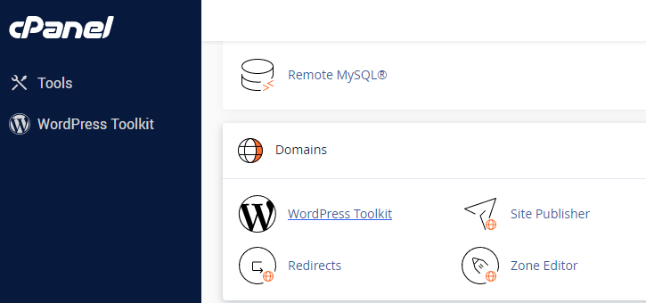
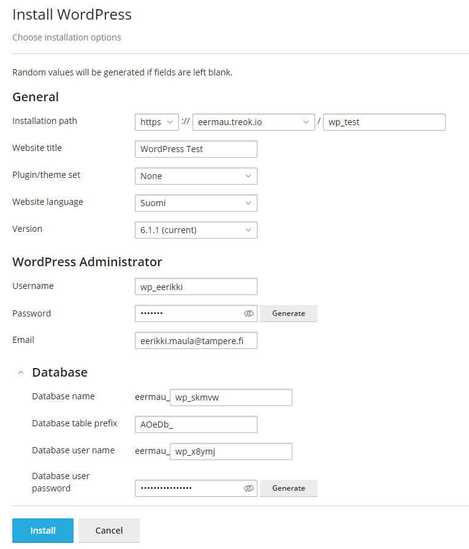

Kirjaudu cPaneliin tunnuksillasi ja valitse WordPress Toolkit. Asenna WordPress

- Määrittele polku
- Aseta sivustolle otsikko ja valitse käytettävä kieli
- Admin-tunnus ja salasana kannattaa laittaa talteen jotta pystyt kirjoitumaan myöhemmin muokataksesi sivustoa. Mikäli nämä tunnukset unohtuvat niiden palauttaminen onnistuu mikäli käytät oikeaa sähköpostiosoitettasi. Mikäli tunnukset unohtuvat joudut asentamaan koko sivuston uudestaan.
